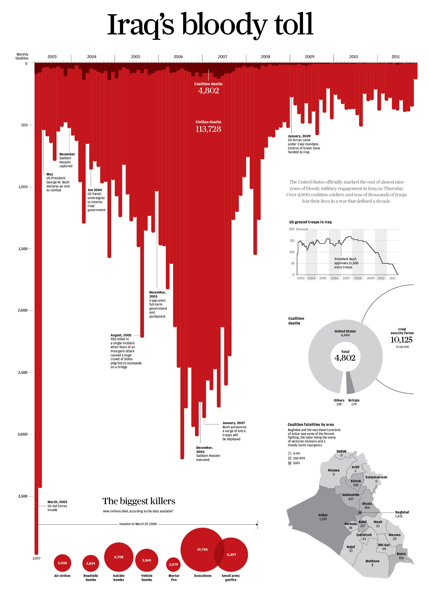
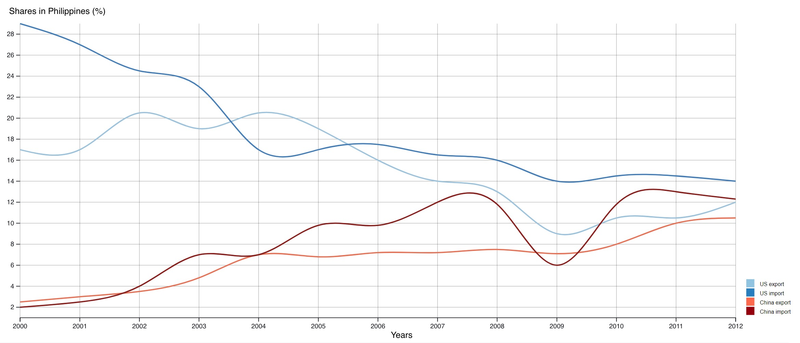

Visualization 1
Gun deaths in Florida
Visualization 1 Improvements
Improvements

A better way to do it
- Have a more representative title
- X-axis at the top to orientate the chart clearly
- Having a barchart would be a better representation of blood dripping than line chart
Visualization 2
US and China in Philippine Foreign Trade
Data
- Nominal: US & China
- Interval: Time series from 2000 to 2012
- Ratio: Share in Philippine Imports
- Ratio: Share in Philippine Exports
Idiom
- A connected scatterplot
- X and Y-Axis for Imports and Exports
- Norminal color scale for US and China
- Labelled zones (More Imports/Exports)
Criticisms
- A connected scatterplot is uncommon and can be unintuitive.
- We are wired to read time from left to right. Time goes in all directions here.
- Connected scatterplot can be very messy, and trends can be hard to see.
- A connected scatterplot is an alternative for dual-axis charts with different
scales.
- However, the axes here are using the same scale.
Criticisms
- The dotted line can be mistaken as a trend line.
- The Axes are labelled % twice.
- The labelled zones are redundant.
Visualization 2 Improvements
Improvements

- Can be represented better with a line chart
- Either use units in the axis or each label in axis
- There should be a legend for the colours to denote the countries instead of writing it in
the chart
- The word “more exports” and “more imports” at the top left and bottom right of the chart
serves no purpose and can be removed